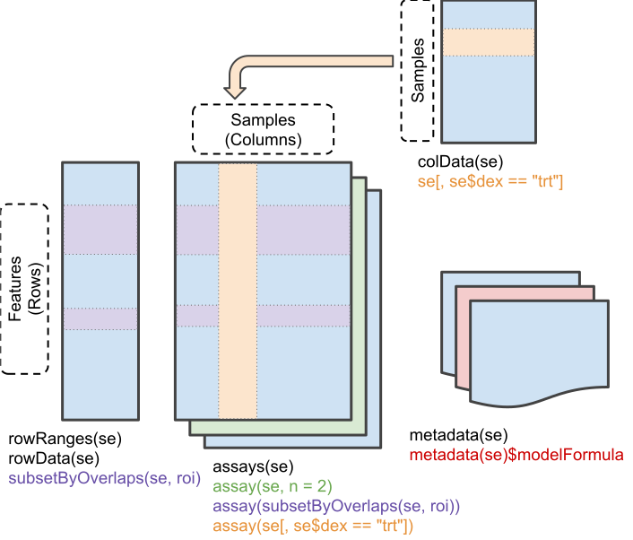

Chapter 2 SummarizedExperiments
Objectives
- Present the
SummarizedExperimentclass, to store and manipulate quantitative omics data. - Show how to build
SummarizedExperimentobjects. - Illustrate how to manipulate
SummarizedExperimentobjects.
Data in bioinformatics is often more complex. To deal with this, developers define specialised data containers (termed classes) that match the properties of the data they need to handle.
This aspect is central to the Bioconductor4 project that reuses the same core data infrastructure across packages. This certainly contributed to Bioconductor’s success. Bioconductor package developers are advised to make use of existing infrastructure to provide coherence, interoperability and stability to the project as a whole.
To illustrate such an omics data container, we’ll present the
SummarizedExperiment class (Morgan et al. 2026), that is used for RNA-Sequencing,
proteomics, metabolomics, … and essentially quantitative omics data.
2.1 SummarizedExperiment
The figure below represents the anatomy of the SummarizedExperiment
class.

Objects of the class SummarizedExperiment contain:
One (or more) assay(s) containing the quantitative omics data (expression data), stored as a matrix-like object. Features (genes, transcripts, proteins, …) are defined along the rows, and samples along the columns.
A sample metadata slot containing sample co-variates, stored as a data frame. Rows from this table represent samples, and the rows match exactly the columns of the expression data.
A feature metadata slot containing feature co-variates, stored as a data frame. The rows of this data frame match exactly the rows of the expression data.
The coordinated nature of the SummarizedExperiment guarantees that
during data manipulation, the dimensions of the different slots will
always match (i.e the columns in the expression data and then rows in
the sample metadata, as well as the rows in the expression data and
feature metadata). For example, if we had to exclude one sample from
the assay, it would be automatically removed from the sample metadata
in the same operation.
The metadata slots can grow additional co-variates (columns) without affecting the other structures.
2.1.1 Creating a SummarizedExperiment
In order to create a SummarizedExperiment, we will create the
individual components, i.e the count matrix, the sample and gene
metadata from csv files. These are typically how RNA-Seq data are
provided (after the raw data have been processed).
- An expression matrix: we load the count matrix, specifying that
the first columns contains row/gene names, and convert the
data.frameto amatrix. You can download it here.
## Epi_ctl1 Epi_ctl2 Epi_ctl3 Epi_KD1 Epi_KD2 Epi_KD3 Fib_ctl1 Fib_ctl2
## MIR6859-1 8 4 3 1 1 6 4 4
## MIR1302-2 0 0 0 0 0 0 0 0
## FAM138A 0 0 0 0 0 0 0 0
## OR4G4P 0 0 0 0 0 0 0 1
## OR4G11P 0 0 0 0 0 0 0 0
## Fib_ctl3 Fib_KD1 Fib_KD2 Fib_KD3
## MIR6859-1 12 2 6 3
## MIR1302-2 0 0 0 0
## FAM138A 0 0 0 0
## OR4G4P 0 0 0 0
## OR4G11P 0 0 0 0## [1] 36223 12- A table describing the samples, available here.
## # A tibble: 12 × 3
## sample Type Condition
## <chr> <chr> <chr>
## 1 Epi_ctl1 Epithelial ctl
## 2 Epi_ctl2 Epithelial ctl
## 3 Epi_ctl3 Epithelial ctl
## 4 Epi_KD1 Epithelial KD
## 5 Epi_KD2 Epithelial KD
## 6 Epi_KD3 Epithelial KD
## 7 Fib_ctl1 Fibroblast ctl
## 8 Fib_ctl2 Fibroblast ctl
## 9 Fib_ctl3 Fibroblast ctl
## 10 Fib_KD1 Fibroblast KD
## 11 Fib_KD2 Fibroblast KD
## 12 Fib_KD3 Fibroblast KD## [1] 12 3- A table describing the genes, available here.
## # A tibble: 6 × 3
## gene ENSEMBL chr
## <chr> <chr> <chr>
## 1 MIR6859-1 ENSG00000278267 1
## 2 MIR1302-2 ENSG00000284332 1
## 3 FAM138A ENSG00000237613 1
## 4 OR4G4P ENSG00000268020 1
## 5 OR4G11P ENSG00000240361 1
## 6 OR4F5 ENSG00000186092 1## [1] 36223 3We will create a SummarizedExperiment from these tables:
- The count matrix that will be used as the
assay. - The table describing the samples will be used as the sample
metadata
colDataslot. - The table describing the genes will be used as the features
metadata
rowDataslot.
To do this we can put the different parts together using the
SummarizedExperiment constructor:
First, we make sure that the samples are in the same order in the count matrix and the sample annotation, and the same for the genes in the count matrix and the gene annotation.
stopifnot(rownames(count_matrix) == gene_metadata$gene)
stopifnot(colnames(count_matrix) == sample_metadata$sample)se <- SummarizedExperiment(assays = list(counts = count_matrix),
colData = sample_metadata,
rowData = gene_metadata)
se## class: SummarizedExperiment
## dim: 36223 12
## metadata(0):
## assays(1): counts
## rownames(36223): MIR6859-1 MIR1302-2 ... LOC124905564 LOC124903857
## rowData names(3): gene ENSEMBL chr
## colnames(12): Epi_ctl1 Epi_ctl2 ... Fib_KD2 Fib_KD3
## colData names(3): sample Type ConditionUsing this data structure, we can access the expression matrix with
the assay function:
## Epi_ctl1 Epi_ctl2 Epi_ctl3 Epi_KD1 Epi_KD2 Epi_KD3 Fib_ctl1 Fib_ctl2
## MIR6859-1 8 4 3 1 1 6 4 4
## MIR1302-2 0 0 0 0 0 0 0 0
## FAM138A 0 0 0 0 0 0 0 0
## OR4G4P 0 0 0 0 0 0 0 1
## OR4G11P 0 0 0 0 0 0 0 0
## OR4F5 0 0 0 0 0 0 0 0
## Fib_ctl3 Fib_KD1 Fib_KD2 Fib_KD3
## MIR6859-1 12 2 6 3
## MIR1302-2 0 0 0 0
## FAM138A 0 0 0 0
## OR4G4P 0 0 0 0
## OR4G11P 0 0 0 0
## OR4F5 0 0 0 0## [1] 36223 12We can access the sample metadata using the colData function:
## DataFrame with 12 rows and 3 columns
## sample Type Condition
## <character> <character> <character>
## Epi_ctl1 Epi_ctl1 Epithelial ctl
## Epi_ctl2 Epi_ctl2 Epithelial ctl
## Epi_ctl3 Epi_ctl3 Epithelial ctl
## Epi_KD1 Epi_KD1 Epithelial KD
## Epi_KD2 Epi_KD2 Epithelial KD
## ... ... ... ...
## Fib_ctl2 Fib_ctl2 Fibroblast ctl
## Fib_ctl3 Fib_ctl3 Fibroblast ctl
## Fib_KD1 Fib_KD1 Fibroblast KD
## Fib_KD2 Fib_KD2 Fibroblast KD
## Fib_KD3 Fib_KD3 Fibroblast KD## [1] 12 3We can also access the feature metadata using the rowData function:
## DataFrame with 6 rows and 3 columns
## gene ENSEMBL chr
## <character> <character> <character>
## MIR6859-1 MIR6859-1 ENSG00000278267 1
## MIR1302-2 MIR1302-2 ENSG00000284332 1
## FAM138A FAM138A ENSG00000237613 1
## OR4G4P OR4G4P ENSG00000268020 1
## OR4G11P OR4G11P ENSG00000240361 1
## OR4F5 OR4F5 ENSG00000186092 1## [1] 36223 32.1.2 Subsetting a SummarizedExperiment
SummarizedExperiment can be subset just like with data frames, with numerics or with characters of logicals.
Below, we create a new instance of class SummarizedExperiment that contains only the 5 first features for the 3 first samples.
## class: SummarizedExperiment
## dim: 5 3
## metadata(0):
## assays(1): counts
## rownames(5): MIR6859-1 MIR1302-2 FAM138A OR4G4P OR4G11P
## rowData names(3): gene ENSEMBL chr
## colnames(3): Epi_ctl1 Epi_ctl2 Epi_ctl3
## colData names(3): sample Type Condition## DataFrame with 3 rows and 3 columns
## sample Type Condition
## <character> <character> <character>
## Epi_ctl1 Epi_ctl1 Epithelial ctl
## Epi_ctl2 Epi_ctl2 Epithelial ctl
## Epi_ctl3 Epi_ctl3 Epithelial ctl## DataFrame with 5 rows and 3 columns
## gene ENSEMBL chr
## <character> <character> <character>
## MIR6859-1 MIR6859-1 ENSG00000278267 1
## MIR1302-2 MIR1302-2 ENSG00000284332 1
## FAM138A FAM138A ENSG00000237613 1
## OR4G4P OR4G4P ENSG00000268020 1
## OR4G11P OR4G11P ENSG00000240361 1We can also use the colData() function to subset on something from
the sample metadata or the rowData() to subset on something from the
feature metadata.
Question
Create a new object keeping only fibroblast samples.
Solution
se1 <- se[, colData(se)$Type == "Fibroblast"]
# Equivalent to
se1 <- se[, se$Type == "Fibroblast"]
dim(se1)## [1] 36223 6## DataFrame with 6 rows and 3 columns
## sample Type Condition
## <character> <character> <character>
## Fib_ctl1 Fib_ctl1 Fibroblast ctl
## Fib_ctl2 Fib_ctl2 Fibroblast ctl
## Fib_ctl3 Fib_ctl3 Fibroblast ctl
## Fib_KD1 Fib_KD1 Fibroblast KD
## Fib_KD2 Fib_KD2 Fibroblast KD
## Fib_KD3 Fib_KD3 Fibroblast KDQuestion
Extract the gene expression levels of genes located on sex chromosomes in Fibroblast control cells
Solution
se2 <- se[rowData(se)$chr %in% c("X", "Y"),
se$Type == "Fibroblast" & se$Condition == "ctl"]
head(assay(se2))## Fib_ctl1 Fib_ctl2 Fib_ctl3
## PLCXD1 1032 965 844
## GTPBP6 1289 1054 1375
## PPP2R3B 609 454 645
## FABP5P13 0 0 0
## KRT18P53 0 0 0
## SHOX 0 0 0## DataFrame with 1806 rows and 3 columns
## gene ENSEMBL chr
## <character> <character> <character>
## PLCXD1 PLCXD1 ENSG00000182378 X
## GTPBP6 GTPBP6 ENSG00000178605 X
## PPP2R3B PPP2R3B ENSG00000167393 X
## FABP5P13 FABP5P13 ENSG00000234958 X
## KRT18P53 KRT18P53 ENSG00000229232 X
## ... ... ... ...
## USP9YP26 USP9YP26 ENSG00000234744 Y
## HSFY8P HSFY8P ENSG00000233156 Y
## PPP1R12BP1 PPP1R12BP1 ENSG00000229238 Y
## RNU6-1314P RNU6-1314P ENSG00000252948 Y
## PARP4P1 PARP4P1 ENSG00000237917 Y2.1.3 Adding variables to the sample metadata
We can also add information to the sample metadata. Suppose that you want to add the center where the samples were collected …
## DataFrame with 12 rows and 4 columns
## sample Type Condition university
## <character> <character> <character> <character>
## Epi_ctl1 Epi_ctl1 Epithelial ctl UCLouvain
## Epi_ctl2 Epi_ctl2 Epithelial ctl UCLouvain
## Epi_ctl3 Epi_ctl3 Epithelial ctl UCLouvain
## Epi_KD1 Epi_KD1 Epithelial KD UCLouvain
## Epi_KD2 Epi_KD2 Epithelial KD UCLouvain
## ... ... ... ... ...
## Fib_ctl2 Fib_ctl2 Fibroblast ctl UCLouvain
## Fib_ctl3 Fib_ctl3 Fibroblast ctl UCLouvain
## Fib_KD1 Fib_KD1 Fibroblast KD UCLouvain
## Fib_KD2 Fib_KD2 Fibroblast KD UCLouvain
## Fib_KD3 Fib_KD3 Fibroblast KD UCLouvainThis illustrates that the metadata slot can grow without affecting the other parts of the object.
2.1.4 Adding gene annotations to the feature metadata
The rowData slot of our se provides the ENSEMBL gene references. It might be interesting to add other types of informative annotations describing genes.
2.1.4.1 Gene annotation database
AnnotationDbi is an R package (Pagès et al. 2026) that provides an
interface for connecting and querying various annotation databases. It
comes with many organism-specific orgDb packages, such as
org.Hs.eg.db for human and org.Mm.eg.db for mouse.
The keytypes() function can help us to see what information we can
extract from the database (ENSEMBL gene ID, gene symbol, gene name,
…)
## [1] "ACCNUM" "ALIAS" "ENSEMBL" "ENSEMBLPROT" "ENSEMBLTRANS"
## [6] "ENTREZID" "ENZYME" "EVIDENCE" "EVIDENCEALL" "GENENAME"
## [11] "GENETYPE" "GO" "GOALL" "IPI" "MAP"
## [16] "OMIM" "ONTOLOGY" "ONTOLOGYALL" "PATH" "PFAM"
## [21] "PMID" "PROSITE" "REFSEQ" "SYMBOL" "UCSCKG"
## [26] "UNIPROT"We can extract information from this database using the mapIds()
function.
For example, we can retrieve the ENTREZID references, or the chromosomal location of the 5 first genes as follow:
# Retrieving the ENTREZID ids
mapIds(x = org.Hs.eg.db,
keys = rownames(se)[1:5],
column = "ENTREZID",
keytype = "SYMBOL")## 'select()' returned 1:1 mapping between keys and columns## MIR6859-1 MIR1302-2 FAM138A OR4G4P OR4G11P
## "102466751" "100302278" "645520" "79504" "403263"# Retrieving the chromosomal location
mapIds(x = org.Hs.eg.db,
keys = rownames(se)[1:5],
column = "MAP",
keytype = "SYMBOL")## 'select()' returned 1:1 mapping between keys and columns## MIR6859-1 MIR1302-2 FAM138A OR4G4P OR4G11P
## "1p36.33" "1p36.33" "1p36.33" "1p36.33" "1p36.33"Questions
Add gene biotypes (stored as
GENETYPEinorg.Hs.eg.dbobject) to the feature metadata slot of ourSummarizedExperimentse.How many genes from each biotype do we have?
Solution
- Add gene biotypes (stored as
GENETYPEinorg.Hs.eg.dbobject) to the feature metadata slot of our SummarizedExperiment se.
rowData(se)$gene_biotype <- mapIds(x = org.Hs.eg.db, keys = rownames(se),
column = "GENETYPE", keytype = "SYMBOL")## 'select()' returned 1:many mapping between keys and columns## DataFrame with 6 rows and 4 columns
## gene ENSEMBL chr gene_biotype
## <character> <character> <character> <character>
## MIR6859-1 MIR6859-1 ENSG00000278267 1 ncRNA
## MIR1302-2 MIR1302-2 ENSG00000284332 1 ncRNA
## FAM138A FAM138A ENSG00000237613 1 ncRNA
## OR4G4P OR4G4P ENSG00000268020 1 pseudo
## OR4G11P OR4G11P ENSG00000240361 1 pseudo
## OR4F5 OR4F5 ENSG00000186092 1 protein-coding- How many protein-coding genes do we have?
## se[rowData(se)$gene_biotype == "protein-coding", ]
table(rowData(se)$gene_biotype == "protein-coding", useNA = "ifany")##
## FALSE TRUE <NA>
## 16757 19261 2052.1.5 Save a SummarizedExperiment
This was a bit of code and time to create our SummarizedExperiment
object. We will need to keep using it throughout the workshop, so it
can be useful to save it as an actual single file on our computer to
read it back into R later. To save any variable an R-specific file we
can use the saveRDS() function and later read it back into R using
the readRDS() function.
2.2 RangedSummarizedExperiment
In addition to the SummarizedExperiment slots we have seen above, it
is also possible to store information about the features’ genomic
ranges/coordinates. Below, we load the airway
RangedSummarizedExperiment data to illustrate this:
## class: RangedSummarizedExperiment
## dim: 63677 8
## metadata(1): ''
## assays(1): counts
## rownames(63677): ENSG00000000003 ENSG00000000005 ... ENSG00000273492
## ENSG00000273493
## rowData names(10): gene_id gene_name ... seq_coord_system symbol
## colnames(8): SRR1039508 SRR1039509 ... SRR1039520 SRR1039521
## colData names(9): SampleName cell ... Sample BioSample## GRangesList object of length 63677:
## $ENSG00000000003
## GRanges object with 17 ranges and 2 metadata columns:
## seqnames ranges strand | exon_id exon_name
## <Rle> <IRanges> <Rle> | <integer> <character>
## [1] X 99883667-99884983 - | 667145 ENSE00001459322
## [2] X 99885756-99885863 - | 667146 ENSE00000868868
## [3] X 99887482-99887565 - | 667147 ENSE00000401072
## [4] X 99887538-99887565 - | 667148 ENSE00001849132
## [5] X 99888402-99888536 - | 667149 ENSE00003554016
## ... ... ... ... . ... ...
## [13] X 99890555-99890743 - | 667156 ENSE00003512331
## [14] X 99891188-99891686 - | 667158 ENSE00001886883
## [15] X 99891605-99891803 - | 667159 ENSE00001855382
## [16] X 99891790-99892101 - | 667160 ENSE00001863395
## [17] X 99894942-99894988 - | 667161 ENSE00001828996
## -------
## seqinfo: 722 sequences (1 circular) from an unspecified genome
##
## ...
## <63676 more elements>This GRangesList contains a list of 64102 range elements, one for
each gene/feature. Each element is a GRanges object that contains
the positions of the exons or the genes:
## GRanges object with 17 ranges and 2 metadata columns:
## seqnames ranges strand | exon_id exon_name
## <Rle> <IRanges> <Rle> | <integer> <character>
## [1] X 99883667-99884983 - | 667145 ENSE00001459322
## [2] X 99885756-99885863 - | 667146 ENSE00000868868
## [3] X 99887482-99887565 - | 667147 ENSE00000401072
## [4] X 99887538-99887565 - | 667148 ENSE00001849132
## [5] X 99888402-99888536 - | 667149 ENSE00003554016
## ... ... ... ... . ... ...
## [13] X 99890555-99890743 - | 667156 ENSE00003512331
## [14] X 99891188-99891686 - | 667158 ENSE00001886883
## [15] X 99891605-99891803 - | 667159 ENSE00001855382
## [16] X 99891790-99892101 - | 667160 ENSE00001863395
## [17] X 99894942-99894988 - | 667161 ENSE00001828996
## -------
## seqinfo: 722 sequences (1 circular) from an unspecified genomeIt is possible to use these genomic ranges to subset features in
regions of interest, defined as GRanges object. Below, for example,
we subset features between bases 1M and 2M on chromosome 7:
## class: RangedSummarizedExperiment
## dim: 34 8
## metadata(1): ''
## assays(1): counts
## rownames(34): ENSG00000002822 ENSG00000073067 ... ENSG00000266391
## ENSG00000273230
## rowData names(10): gene_id gene_name ... seq_coord_system symbol
## colnames(8): SRR1039508 SRR1039509 ... SRR1039520 SRR1039521
## colData names(9): SampleName cell ... Sample BioSampleReferences
The Bioconductor was initiated by Robert Gentleman, one of the two creators of the R language. Bioconductor provides tools for the analysis and comprehension of omics data. Bioconductor uses the R statistical programming language, and is open source and open development.↩︎